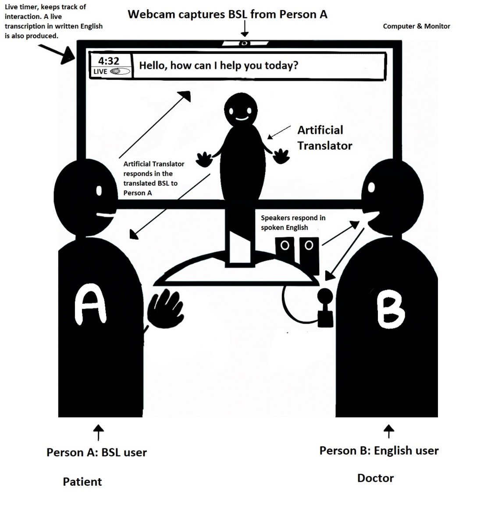
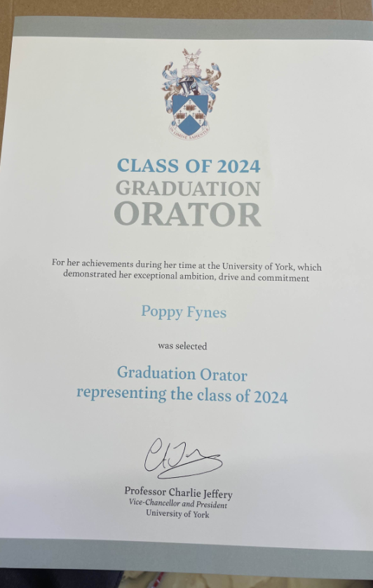

Awards & Achievements
Here is the homepage for all the awards and achievements I have been lucky to gain over the past few years. Scroll down to discover more!
Academic Achievements
- University Commendation award for achieving the highest grades in my Physics and Electronics cohort at the University of York in 2021
- Foundation of Physics and Computer Science University of York: 84% overall (Equivalent to a 1st with distinction)
- ‘The Oliver Award’ for sixth form progress and achieving the highest grades in my sixth form cohort. Awarded a certificate and engraved trophy for 2020
- SC-900 Microsoft certification (Due to receive in September 2023)
- BEng Hons in Computer Science 1:1 predicted, (Due to graduate in July 2024)
- Nominee for Intern of The Year 2024
- Graduant Orator Award - Chosen from my entire degree cohort to represent and present on the behalf of the graduant ceremony
Extracurricular Achievements
- Qualification in ICT NQF/LVL2: PowerPoint (98%), Word (98%), Excel (100%), and ICT competency (97%)
- Completed Course ‘Leaders of Tomorrow’ for business enterprise delivered by AI in business during 2020
- Qualification in Level 2 Medical advisory for Holland and Barrett (2022)
- Winner (2021), Finalist (2022) & Finalist (2023) of ‘The Scott Award’ for Art and Design
Image Gallery

 Trophy for the Oliver Award
Trophy for the Oliver Award

Certificate for Oration Award